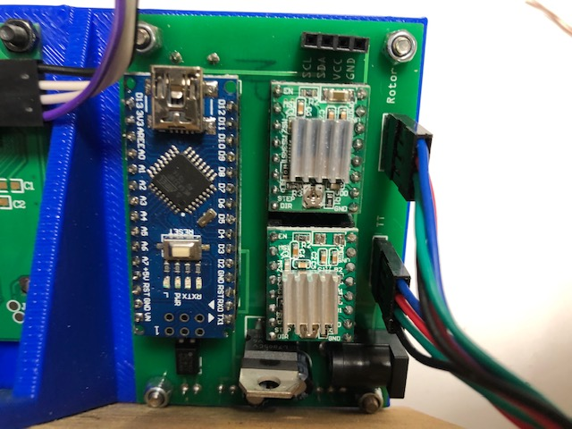
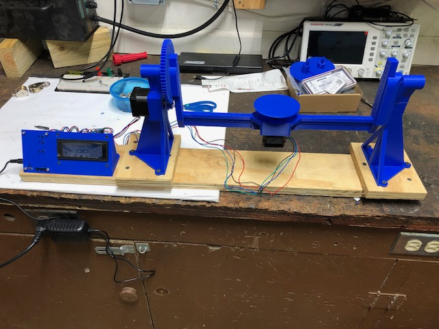

Scanner Final Assembly
The electronics PCB arrived from Germany this weekend. There were months of delays due to COVID. It was time to cease putting off additional progress. I assembled the PCB which was a quick process as all components were through hole. I took the risk of not testing more than a visual inspection of the soldered joints. The components I was connecting were cheap and I have spares so I opted to just turn on power and see if anything was damaged. After power was connected, nothing let out blue smoke so I forged ahead.

I’ve decided to change the requirements for the project and use the standard A4988 stepper drivers instead of the Trinamic drivers. This is a direct effort to complete the project and not let the stepper drivers stand in my way. As a seperate project, I want to build a A4988 to Trinamic adapter board as their footprints are not the same. A couple of pins are switched. I’ll probably just do a simple adapter board. This will likely require some minor changes to the setup with A4988 either in software or hardware to ensure the microstepping is the same. Perahps I should opt for some sort of logic circuit to do the microstepping conversion for me. That might be a sellable product for people that want to upgrade the drivers on their 3D printers.
Finally, I installed the scanner on a piece of wood to keep in stationary during use. This provides enough ballast that it won’t tip during scanning. I may need to do some cable management on the system. I’m going to see how well this functions for the time being. Just putting the wiring in loom would make a big difference to the appearance of the system.

I captured a quick timelapse of the system mechanically functioning. It operates slowly so a timelapse is the only reasonable way to watch it. This video is doing what would be a scan of a golf ball. I have not yet set up the bluetooth shutter so I haven’t attempted any scans. I am quite close and getting steadily more excited. I have not looked into the lighting or if this scan cycle is the right one for this particular scan. I’m sure more will be learned as time goes on.